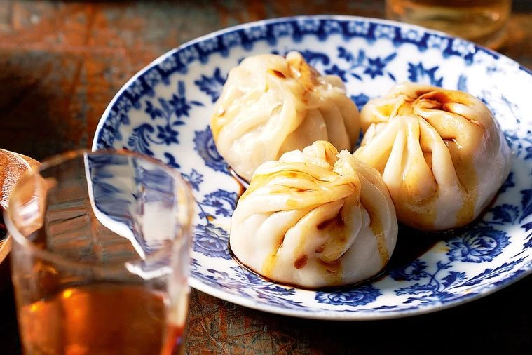

Dumplings

Description
This is the final product of the dumplings we are about to make. Stunning, isn't it?
It is a recipe that produces the perfect flavor and texture.
Ingredients
- 1 cup of Flour
- 2 tsp. of Baking powder
- 2 tsp. of Sugar
- 1/2 tsp. of Salt
- 1/2 cup of Milk
- 1 tbsp. Margarine
Steps
- Stir together flour, baking powder, sugar, and salt in a bowl.
- Cut in butter until mixture is crumbly.
- Stir in milk and mix until a batter forms that is thick enough to be scooped with a spoon.
- Allow batter to rest for 3 to 5 minutes.
- Drop batter by spoonfuls into boiling stew or soup.
- Cover and simmer without lifting the lid for 15 minutes.